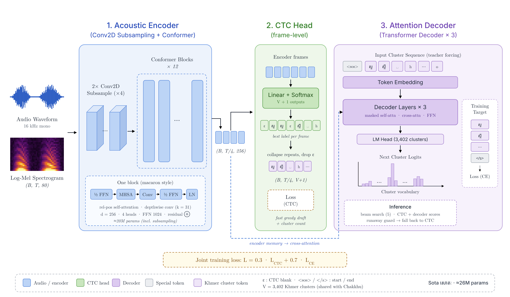
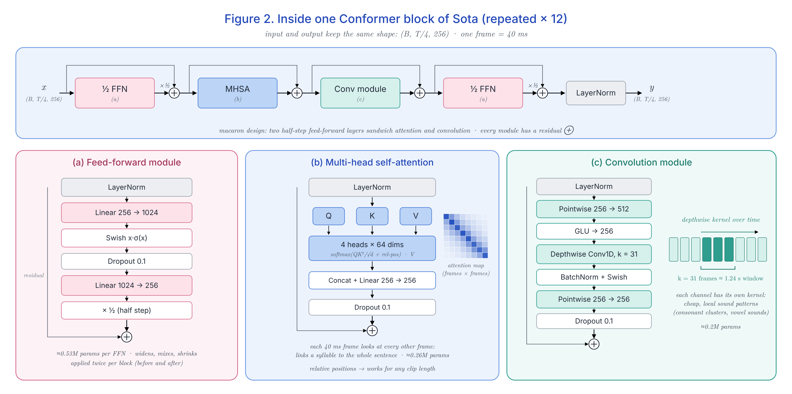
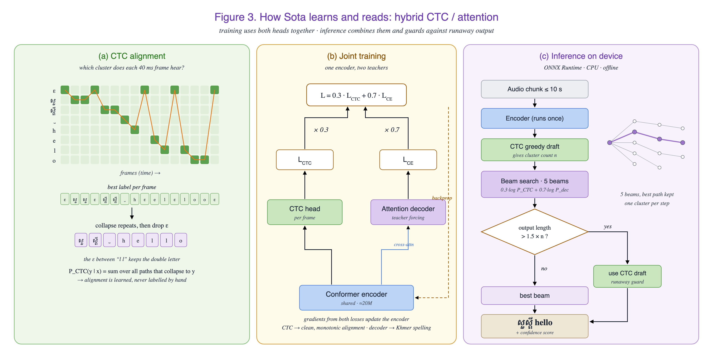

Sota (សោតៈ, "ear") turns Khmer and English speech into text you can copy: voice notes, meetings, lectures and phone calls. Small enough to run on your phone, without internet, so your voice never leaves the device.
Record yourself or upload an audio file on the Hugging Face demo. It opens in a new tab.
This is Sota's first training run. It is a small model (≈26M parameters), trained mostly on clean, read Khmer speech. It works best on clear speech from one speaker. Noisy audio, phone calls and Khmer–English mixed speech are not trained or tested yet, so expect more mistakes there. The next version adds more real speech, noise and English.
Most speech tools were trained mostly on English. Khmer brings problems they rarely see.
Khmer is written without spaces, so "word error rate" does not fit. Sota is scored by character error rate (CER), with spaces ignored.
People say តោះទៅ cafe ថ្ងៃនេះ. Today's Khmer models often write the English words as Khmer sounds instead.
Phone calls, street noise, fast talk and many accents. Models tuned on clean read speech lose accuracy exactly here.
Sota is trained from scratch: about 26 million parameters (≈33 MB as an int8 file), roughly 23× smaller than Qwen3-ASR-0.6B. It shares Chakkhu's recipe: Khmer clusters as tokens, a fast CTC head plus a cluster decoder, a runaway guard and beam search.

Figure 1. Overview. Log-Mel features → Conv2D subsampling → 12 Conformer blocks → CTC head and attention decoder, trained together.

Figure 2. Inside one Conformer block. Attention hears the whole sentence; convolution hears each sound.

Figure 3. How it learns and reads. CTC alignment, joint loss, and decoding on the device.
| Design | On a phone? |
|---|---|
| Fine-tune Whispermultilingual, encoder–decoder | slow, may repeat |
| Fine-tune Qwen3-ASR0.6B parameters, strong on clean speech | too big |
| Conformer + CTC onlysmall and fast | weak spelling |
| Hybrid CTC + cluster decoderour choice, ≈26M | fast + right spelling |
We tested Sota and the best free Khmer speech models on the same 12 hours of held-out recordings (6,513 clips, 16 speakers never used in training), with the same rules. Lower CER is better.
| Model | Size | All | nxkmer | OpenSLR42 |
|---|---|---|---|---|
| Sotafrom scratch · beam 5 | 26M · 33 MB int8 | 3.40% | 3.25% | 5.20% |
| Sota v2+ 224 h harder and open data · beam 5 | 26M · 33 MB int8 | 4.26% | 4.07% | 6.61% |
| Sota v3+ ≈1,060 h real speech · beam 5 · v3/ | 26M · 33 MB int8 | 4.13% | 3.95% | 6.31% |
| Qwen3-ASR-0.6B-Khmerfine-tuned Qwen3-ASR | 0.6B | 13.20% | 13.34% | 11.41% |
| whisper-small-khmer-v2fine-tuned Whisper small | ≈244M | 18.57% | 19.72% | 4.61% † |
Qwen3-ASR-0.6B-Khmer and whisper-small-khmer-v2, the strongest open Khmer models, run on CPU like Sota.
Now: 16 speakers held out from training (clean read and spoken Khmer). Next: harder real-life clips (phone calls, noise and Khmer–English mixing), scored separately.
CER = wrong, missing or extra characters ÷ characters in the right answer. Spaces and punctuation are removed first. Same clips and rules for every model.
Every set is checked for a license that allows training before it is used.
| Real Khmer speech, ≈237 hoursNXKMER TTS 450 (38 speakers) and OpenSLR 42 (Google); 16 kHz mono, text normalized, split by speaker; dev and test come only from here | CC BY / BY-SA |
| Synthetic speech, ≈610 hoursmade by VoxPocket TTS (VoxCPM2): designed voices and voices cloned from open Khmer speech sets, styles and Khmer–English sentences; at most half of each epoch | own |
| AugmentationSpecAugment masks, speed 0.9 / 1.0 / 1.1, background noise, room echo, phone-call audio | own |
| Khmer text for the decoderthe same sentences Chakkhu learns from | own |
| Held-out speakersfrom the real speech, never seen in training (not even as cloned voices) | own |
| Real-life clipsphone calls, street noise, Khmer + English (to collect) | own |
| khmer-asr-compare-eval287 Khmer and code-switched clips on Hugging Face (gated) | checking |
One step at a time, each with a check before the next.
Sota សោតៈ, the ≈26M hybrid design and three architecture figures.
3,402 Khmer cluster tokens, shared with Chakkhu.
≈850 h (≈237 h real): resampled, text cleaned, split by speaker, cloned voices and repeated sentences removed.
Qwen3-ASR-Khmer 13.2% and Whisper-small-khmer 18.6% CER on the same 12 h test set.
Decoder learned Khmer text first, then a small test run, then the full run: 100k steps on one GPU. Test CER 3.4%.
Voice typing in the Akkhara keyboard, on phone and computer, offline.
@misc{ing2026sota,
author = {Ing, Muyleang},
title = {Sota: A Small Khmer Speech Recognition Model Trained from Scratch},
year = {2026},
publisher = {Hugging Face},
url = {https://huggingface.co/muyleanging/Sota-ASR-Khmer}
}| Set | License |
|---|---|
| NXKMER TTS 450NTQAI · real speech, 38 speakers · ≈212 h train, plus all dev and most test clips | CC BY 4.0 |
| OpenSLR 42 · High quality TTS data for KhmerGoogle · real speech · Sodimana et al., SLTU 2018 | CC BY-SA 4.0 |
| VoxPocket + VoxCPM2made the ≈610 h of synthetic speech · VoxCPM by OpenBMB | Apache-2.0 |
| FLEURSGoogle · reference voices · Conneau et al., 2022 | CC BY 4.0 |
| Khmer Speech Corpusseanghay · reference voices | CC BY 4.0 |
| iAny Khmer Voicesengtha / iAny community · reference voices | CC BY-SA 4.0 |
| Cultural Khmer ASR DatasetDigital Divide Data · reference voices · v3: ≈1,060 h real speech training | CC BY-SA 4.0 |
| YODAS2ESPnet · reference voices · Li et al., ASRU 2023 | CC BY 3.0 |
| khm-asr-openrinabuoy · reference voices | not stated |
| Khmer Speech of Phnom Penh Gendarmerieseanghay · reference voices · published for research only | research only |
@misc{ntqai2026nxkmer,
author = {NTQAI},
title = {NXKMER TTS 450},
year = {2026},
publisher = {Hugging Face},
url = {https://huggingface.co/datasets/NTQAI/nxkmer-tts-450}
}
@inproceedings{kjartansson-etal-tts-sltu2018,
title = {{A Step-by-Step Process for Building TTS Voices Using Open Source Data and Framework for Bangla, Javanese, Khmer, Nepali, Sinhala, and Sundanese}},
author = {Keshan Sodimana and Knot Pipatsrisawat and Linne Ha and Martin Jansche and Oddur Kjartansson and Pasindu De Silva and Supheakmungkol Sarin},
booktitle = {Proc. The 6th Intl. Workshop on Spoken Language Technologies for Under-Resourced Languages (SLTU)},
year = {2018},
address = {Gurugram, India},
pages = {66--70},
url = {http://dx.doi.org/10.21437/SLTU.2018-14}
}
@misc{ing2026voxpocket,
author = {Ing, Muyleang},
title = {VoxPocket: A Small Khmer Text-to-Speech Model with Voice Cloning and Styles},
year = {2026},
publisher = {Hugging Face},
url = {https://huggingface.co/muyleanging/VoxPocket-TTS-Khmer}
}
@article{voxcpm2025,
title = {VoxCPM: Tokenizer-Free TTS for Context-Aware Speech Generation and True-to-Life Voice Cloning},
author = {Zhou, Yixuan and Zeng, Guoyang and Liu, Xin and Li, Xiang and Yu, Renjie and Wang, Ziyang and Ye, Runchuan and Sun, Weiyue and Gui, Jiancheng and Li, Kehan and Wu, Zhiyong and Liu, Zhiyuan},
journal = {arXiv preprint arXiv:2509.24650},
year = {2025}
}
@article{fleurs2022arxiv,
title = {FLEURS: Few-shot Learning Evaluation of Universal Representations of Speech},
author = {Conneau, Alexis and Ma, Min and Khanuja, Simran and Zhang, Yu and Axelrod, Vera and Dalmia, Siddharth and Riesa, Jason and Rivera, Clara and Bapna, Ankur},
journal = {arXiv preprint arXiv:2205.12446},
year = {2022}
}
@inproceedings{li2023yodas,
title = {Yodas: Youtube-Oriented Dataset for Audio and Speech},
author = {Li, Xinjian and Takamichi, Shinnosuke and Saeki, Takaaki and Chen, William and Shiota, Sayaka and Watanabe, Shinji},
booktitle = {2023 IEEE Automatic Speech Recognition and Understanding Workshop (ASRU)},
pages = {1--8},
year = {2023}
}